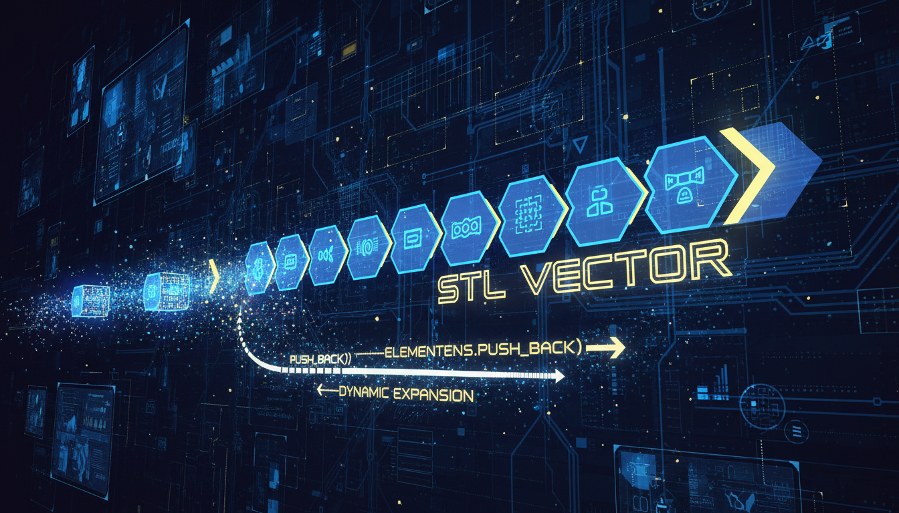

std::vector, методи, ітератори, ефективність

vector — це динамічний масив, що автоматично змінює розмір при додаванні елементів.
#include <iostream>
#include <vector>
int main() {
// Створення
std::vector<int> v1; // Порожній
std::vector<int> v2(5); // 5 елементів (0)
std::vector<int> v3(5, 10); // 5 елементів (10)
std::vector<int> v4 = {1,2,3,4,5}; // Ініціалізація списком
// Додавання
v1.push_back(10);
v1.push_back(20);
v1.push_back(30);
// Доступ
std::cout << v1[0] << std::endl; // 10 (без перевірки)
std::cout << v1.at(1) << std::endl; // 20 (з перевіркою)
std::cout << v1.front() << std::endl; // 10
std::cout << v1.back() << std::endl; // 30
// Ітерація
std::cout << "Елементи: ";
for (int x : v1) {
std::cout << x << " ";
}
std::cout << std::endl;
// Розмір
std::cout << "Розмір: " << v1.size() << std::endl;
std::cout << "Місткість: " << v1.capacity() << std::endl;
// Видалення
v1.pop_back(); // Видалити останній
v1.clear(); // Очистити все
return 0;
}